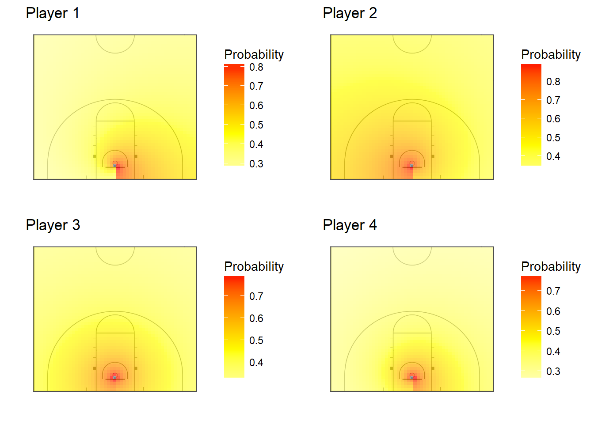

Chapter 7 Models
For our models, we consider the shot location, the shooter identity, and shooting outcomes in previous games as factors that can affect a shot outcome. For each of the following models, shot location is parametrized in polar coordinates, or \(r\) and \(\theta\). Diagnostic plots for these models can be found in Appendix 1.
7.0.0.1 Generalized Linear Model
The results of the credible intervals are reported for the same four players, in the same order.
priormod <- glm(result ~ log(r) + theta, data=Xtrain %>% filter(as.integer(as.factor(gameid)) < 5), family="binomial")
mu0r <- summary(priormod)[["coefficients"]]["log(r)","Estimate"]
mu0theta <- summary(priormod)[["coefficients"]]["log(r)","Std. Error"]
tau0r <- summary(priormod)[["coefficients"]]["theta","Std. Error"]^2
tau0theta <- summary(priormod)[["coefficients"]]["theta","Std. Error"]^2
fit_glm <- function(dat, S = 10000, B = 500){
model.glm <- function(){
# N observations
for(i in 1:N){
logit(prob[i]) <- beta_int*int[i] + beta_r*logr[i] + beta_theta*theta[i]
result[i] ~ dbern(prob[i])
}
# Priors
beta_int ~ dnorm(0, 0.1)
beta_r ~ dnorm(mu0r, 0.01) #would not expect a lot of variation in distance parameter between players. Everyone should get worse as distance increases.
beta_theta ~ dnorm(mu0theta, 0.1)
}
datlist.glm <- list(
int = rep(1, nrow(dat)),
logr = log(dat$r),
theta = dat$theta,
result = dat$result,
N = nrow(dat),
mu0r = mu0r,
mu0theta = mu0theta
)
params.glm <- c("beta_int","beta_r", "beta_theta")
sim <- jags(data = datlist.glm,
n.iter = S, n.chains = 1, n.burnin = B,
#inits=list(list(p = rep(0.5, nrow(P0)))),
parameters.to.save = params.glm,
model.file=model.glm
)
sim.mcmc <- as.data.frame(as.mcmc(sim)[[1]])
return(sim.mcmc)
}
plot_params <- function(sim.mcmc = NA){
coefs <- sim.mcmc[,c("beta_int","beta_r","beta_theta")] %>% apply(2, quantile, c(0.025,0.5,0.975)) %>% t() %>% as.data.frame()
colnames(coefs) <- c("lo", "mid", "hi")
xtext <- c("intercept","distance","angle")
xfact <- factor(xtext, levels=xtext)
ggplot(data = coefs, aes(x=xfact , y=mid)) +
geom_point() +
geom_errorbar(aes(ymin=lo, ymax=hi), width=0.5) +
geom_abline(intercept=0, slope=0, linetype=2) +
labs(title="GLM Posterior Parameters (95% Credible Intervals)",
x="Predictor",
y="Estimate") +
theme_bw()
}
dat1 <- Xtrain %>% filter(globalplayerid %in% playerseasons[1,1] &
season %in% playerseasons[1,2])
dat2 <- Xtrain %>% filter(globalplayerid %in% playerseasons[2,1] &
season %in% playerseasons[2,2])
dat3 <- Xtrain %>% filter(globalplayerid %in% playerseasons[3,1] &
season %in% playerseasons[3,2])
dat4 <- Xtrain %>% filter(globalplayerid %in% playerseasons[4,1] &
season %in% playerseasons[4,2])
if(!load_chains){
glm1 <- fit_glm(dat1)
glm2 <- fit_glm(dat2)
glm3 <- fit_glm(dat3)
glm4 <- fit_glm(dat4)
glmtot <- fit_glm(Xtrain)
save(glm1, file="../rdatafiles/glm1.RData")
save(glm2, file="../rdatafiles/glm2.RData")
save(glm3, file="../rdatafiles/glm3.RData")
save(glm4, file="../rdatafiles/glm4.RData")
save(glmtot, file="../rdatafiles/glmtot.RData")
}else{
load(file="../rdatafiles/glm1.RData")
load(file="../rdatafiles/glm2.RData")
load(file="../rdatafiles/glm3.RData")
load(file="../rdatafiles/glm4.RData")
load(file="../rdatafiles/glmtot.RData")
}
plot_params(glm1)
plot_params(glm2)
plot_params(glm3)
plot_params(glm4)
plot_params(glmtot)The five plots above show the posteriors of the generalized linear model parameters for the four players and seasons that we investigated in the Exploratory Data Analysis section, and the parameters for the entire team over all seasons. From these plots, we see that the effect of the angle contains zero, and it is probably not predictive of a made shot. We also see that the 95% credible interval on the effect of distance is completely negative, which follows the intuitive idea that the probability of a made shot decreases as distance from the basket increases.
7.0.0.2 Player-by-Player Hierarchical Model
priormod <- glm(result ~ log(r) + theta, data=Xtrain %>% filter(as.integer(as.factor(gameid)) < 5), family="binomial")
mu0r <- summary(priormod)[["coefficients"]]["log(r)","Estimate"]
mu0theta <- summary(priormod)[["coefficients"]]["log(r)","Std. Error"]
tau0r <- summary(priormod)[["coefficients"]]["theta","Std. Error"]^2
tau0theta <- summary(priormod)[["coefficients"]]["theta","Std. Error"]^2
fit_players <- function(dat = NA, S = 10000, B = 500){
# cond <- Xtrain$globalplayerid %in% playerids & Xtrain$season %in% seasons
# Xtrain_sub <- Xtrain %>% filter(cond)
model.player <- function(){
# N observations
for(i in 1:N){
logit(prob[i]) <- beta_int[player[i]]*int[i] + beta_r[player[i]]*logr[i] + beta_theta[player[i]]*theta[i]
result[i] ~ dbern(prob[i])
}
# priors on random player effects
for(j in 1:M){
beta_int[j] ~ dnorm(beta_int0,tau_int)
beta_r[j] ~ dnorm(beta_r0,tau_r)
beta_theta[j] ~ dnorm(beta_theta0,tau_theta)
}
# Priors
beta_int0 ~ dnorm(0, 0.1)
beta_r0 ~ dnorm(mu0r, 0.01) #would not expect a lot of variation in distance parameter between players. Everyone should get worse as distance increases.
beta_theta0 ~ dnorm(mu0theta, 0.1)
# Hyperpriors
tau_int ~ dgamma(10, 100)
tau_r ~ dgamma(10, 0.2)
tau_theta ~ dgamma(10, 10)
}
datlist.player <- list(
logr = log(dat$r),
theta = dat$theta,
result = dat$result,
player = as.integer(as.factor(dat$globalplayerid)),
N = nrow(dat),
int = rep(1, nrow(dat)),
M = n_distinct(dat$globalplayerid),
mu0r = mu0r,
mu0theta = mu0theta,
tau0r = tau0r,
tau0theta = tau0theta
)
params <- c("beta_int","beta_r", "beta_theta","beta_int0","beta_r0", "beta_theta0", "tau_int", "tau_r", "tau_theta")
sim.player <- jags(data = datlist.player,
n.iter = S, n.chains = 1, n.burnin = B,
#inits=list(list(p = rep(0.5, nrow(P0)))),
parameters.to.save = params,
model.file=model.player
)
sim.mcmc.player <- as.data.frame(as.mcmc(sim.player)[[1]])
return(sim.mcmc.player)
}
get_player_params <- function(dat=NA, sim.mcmc.hier=NA){
sim.mcmc.means <- colMeans(sim.mcmc.hier)
sim.mcmc.quants <- apply(sim.mcmc.hier, 2, quantile, c(0.025, 0.25, 0.50, 0.75, 0.975))
#playermapshots <- factorid #merge(factorid, playermap, by="globalplayerid", all=TRUE)
playermapparams <- playermap %>%
mutate(int = NA, r = NA, theta = NA,
int025 = NA, int25 = NA, int50 = NA, int75 = NA, int975 = NA,
r025 = NA, r25 = NA, r50 = NA, r75 = NA, r975 = NA,
theta025 = NA, theta25 = NA, theta50 = NA, theta75 = NA, theta975 = NA)
for(i in 1:nrow(playermap)){
fid <- playermapparams$factorid[i]
if(!is.na(fid)){
theta_i <- sim.mcmc.means[grep(paste0("\\[",fid,"\\]"), names(sim.mcmc.means))]
theta_i <- c(theta_i, sim.mcmc.quants[,grep(paste0("\\[",fid,"\\]"), names(sim.mcmc.means))])
}else{
theta_i <- sim.mcmc.means[grep(paste0("(int0)|(r0)|(theta0)"), names(sim.mcmc.means))]
theta_i <- c(theta_i, sim.mcmc.quants[,grep(paste0("(int0)|(r0)|(theta0)"), names(sim.mcmc.means))])
}
playermapparams[i,3:ncol(playermapparams)] <- theta_i
}
return(playermapparams)
}
if(!load_chains){
player.mcmc <- fit_players(dat = Xtrain)
player.params <- get_player_params(Xtrain, player.mcmc)
save(player.mcmc, file="../rdatafiles/playermcmc.RData")
save(player.params, file="../rdatafiles/playerparams.RData")
}else{
load("../rdatafiles/playermcmc.RData")
load("../rdatafiles/playerparams.RData")
}
fourparams <- merge(playerseasons, player.params ,all=FALSE) %>% select(globalplayerid, int, r, theta)
mainlab <- "Posterior Density with Four Players"
ggplot(data = player.mcmc, aes(x=beta_int0)) +
geom_density() +
geom_vline(xintercept = fourparams[["int"]], col="red") +
labs(title=mainlab,x="Intercept", y="Density") +
theme_bw() +
theme(panel.grid = element_blank())
ggplot(data = player.mcmc, aes(x=beta_r0)) +
geom_density() +
geom_vline(xintercept = fourparams[["r"]], col="red") +
labs(title=mainlab,x="Distance", y="Density") +
theme_bw() +
theme(panel.grid = element_blank())
ggplot(data = player.mcmc, aes(x=beta_theta0)) +
geom_density() +
geom_vline(xintercept = fourparams[["theta"]], col="red") +
labs(title=mainlab,x="Angle", y="Density") +
theme_bw() +
theme(panel.grid = element_blank())
# plot(density(player.mcmc[["beta_int0"]]), mainlab,xlab="intercept")
# abline(v=fourparams[["int"]], col="red")
#
# plot(density(player.mcmc[["beta_r0"]]), mainlab, xlab="r")
# abline(v=fourparams[,2], col="red")
#
# plot(density(player.mcmc[["beta_theta0"]]),mainlab, xlab="theta")
# abline(v=fourparams[,3], col="red")The hierarchical model shows us that our four high-usage players of interest do not appear to be randomly spread across the population of players. The intercept plot shows that all four are in or close to the top half of values, and the radius plot shows the opposite with the four players trending towards lower parameter values. The high intercepts make intuitive sense, because the players who take a lot of shots are most more capable of making them under baseline conditions than their teammates are. However, the observation that these players would have a more drastic drop in field goal percentage than an average Duke player as they move farther from the basket is surprising.
7.0.0.3 finish this section!
In the plots, below, we have contour plots showing players’ expected field goal percentages at different locations on the court.
get_raneffs <- function(sim.mcmc = player.mcmc, j=NA){
if(j>0){
raneffs <- sim.mcmc %>%
'['(grepl(x=names(.), pattern=paste0("\\[",j,"\\]")))
}else{
raneffs <- sim.mcmc %>%
'['(grepl(x=names(.), pattern=paste0("0")) &
!grepl(x=names(.), pattern="\\["))
}
return(raneffs)
}
mcmc_avg <- function(sim.mcmc = player.mcmc, j = NA, MLE=FALSE){
all_x <- seq(-25,25, 1)
all_y <- seq(0,94/2, 1) - 4
S <- nrow(sim.mcmc)
BETA <- as.matrix(get_raneffs(sim.mcmc, j))
if(MLE){ #faster, but underestimates variance
S <- 1
BETA <- matrix(colMeans(BETA), nrow=1)
}
PROBSXY <- array(data=NA, dim=c(length(all_x),length(all_y), S))
# Monte Carlo Average
for(s in 1:S){
for(i in 1:length(all_x)){
for(j in 1:length(all_y)){
x <- all_x[i]
y <- all_y[j]
r <- log(sqrt(x^2+y^2))
t <- atan(y/x)
if(x < 0){
t <- t + pi
}
t <- t - pi/2
eBx <- exp(-t(BETA[s,]) %*% c(1, r, t))
#eBx <- exp(-t(colMeans(BETA)) %*% c(1, r, t))
p <- 1/(1+eBx)
PROBSXY[i,j,s] <- p
}
}
}
probsxy <- apply(PROBSXY, c(1,2), mean)
return(probsxy)
}
# filled.contour(x = all_x, y = all_y, z = probsxy,
# main = "Shot Success Probabilities",
# xaxt = "n", yaxt= "n",
# color.palette = colorRampPalette(c("yellow", "red")))
plot_contours <- function(probsxy = NA, main=""){
all_x <- seq(-25,25, 1)
all_y <- seq(0,94/2, 1) - 4
probsxy_melt <- melt(probsxy, c("x","y"))
probsxy_melt$x <- rep(all_x, length = nrow(probsxy_melt))
probsxy_melt$y <- rep(all_y, each = length(all_x))
all_xn <- seq(min(all_x), max(all_x), length=nrow(probsxy_melt))
#img.path <- "/home/grad/neb20/hothand/index/figure/Basketball-Court-Dimensions2.png"
img.path <- "./figure/ncaa_bball_court2.png"
img <- readPNG(img.path)
a <- 0.7
contplot <- ggplot(probsxy_melt, aes(x = x, y = y, z = value)) +
annotation_custom(rasterGrob(img,
x=0.5,y=0.50,
width = .92, height = .92),
-Inf, Inf, -Inf, Inf) +
geom_tile(aes(fill = value), alpha=a) + # the color gradient
#stat_contour(bins = 15) + # the lines
scale_fill_gradient2(low = rgb(1,1,1), # white
mid = rgb(1,1,0), # yellow
high= rgb(1,0,0), # red
midpoint=0.4) +
labs(title = main, y="", x="") +
guides(fill = guide_colorbar(title = "Probability")) + # the legend
# geom_line(aes(x=all_xn, y=sqrt(19.75^2 - all_xn^2))) +
# geom_line(aes(x=all_xn, y=94/2)) +
theme_bw() +
theme(panel.grid = element_blank(), panel.border=element_blank())
contplot
# library(png); library(gridExtra); library(grid)
# grid.draw(grid.raster(img))#+ contplot
# r_three <- 20.75
# topofkey <- 19.75
# lane <- 0
# r_rim <- 1.5/2
# x3 <- seq(-r_three, r_three, 0.1)
# y3 <- sqrt(r_three^2 - x3^2)
# lines(x3, y3)
}
if(!load_chains){
avg1 <- mcmc_avg(player.mcmc, j=playermap$factorid[playermap$globalplayerid == playerseasons[1,1]], MLE=FALSE)
avg2 <- mcmc_avg(player.mcmc, j=playermap$factorid[playermap$globalplayerid == playerseasons[2,1]], MLE=FALSE)
avg3 <- mcmc_avg(player.mcmc, j=playermap$factorid[playermap$globalplayerid == playerseasons[3,1]], MLE=FALSE)
avg4 <- mcmc_avg(player.mcmc, j=playermap$factorid[playermap$globalplayerid == playerseasons[4,1]], MLE=FALSE)
avgtot <- mcmc_avg(player.mcmc, j=0, MLE=FALSE)
save(avg1, file="../rdatafiles/avg1.RData")
save(avg2, file="../rdatafiles/avg2.RData")
save(avg3, file="../rdatafiles/avg3.RData")
save(avg4, file="../rdatafiles/avg4.RData")
save(avgtot, file="../rdatafiles/avgtot.RData")
}else{
load("../rdatafiles/avg1.RData")
load("../rdatafiles/avg2.RData")
load("../rdatafiles/avg3.RData")
load("../rdatafiles/avg4.RData")
load("../rdatafiles/avgtot.RData")
}
plot_contours(avg1, "Hello")
plot_contours(avg2)
plot_contours(avg3)
plot_contours(avg4)
plot_contours(avgtot, "Team Effect")
7.0.0.4 Dynamic Generalized Linear Model
priormod <- glm(result ~ log(r) + theta, data=Xtrain %>% filter(as.integer(as.factor(gameid)) < 5), family="binomial")
fit_dglm <- function(playerids, seasons, iterate=TRUE){
{
cond <- Xtrain$globalplayerid %in% playerids & Xtrain$season %in% seasons
Xtrain_sub <- Xtrain %>% filter(cond)
Z <- Xtrain_sub %>% mutate(logr = log(r) - mean(log(r))) %>% select(logr, theta) %>% cbind(1,.)
X <- Xtrain_sub %>% select(x=xt, y=yt)
y <- Xtrain_sub %>% select(result) %>% '[['(1)
ym <- 94; xm <- 50
shots <- rep(TRUE,nrow(Z)) #no missing shots in this case
tshot <- which(shots)
nshots <- length(tshot)
iy <- which(y[!is.nan(y)] == 1)
T <- length(shots)
#initial parameters
theta <- coef(priormod)
p <- length(theta)
#Forward Filtering
#set up DGLM and initial prior
#first, set up covariates per time interval
F <- t(Z)
p <- dim(F)[1]
#theta = state vector (GLM parameters) (px1)
#F = the data...regression vectors for all t...aka the design matrix (pxT)
#G = known evolution matrix ???????
#omega = evolution errors with 0 mean and known variance matrix W
#g(.) = function to map eta to real line (logit)
mt <- theta
Ct <- diag(p)
#mt = prior mean vector
#Ct = prior covariance matrix
#(theta[t-1]|D[t-1]) ~ N(mt[t-1], Ct[t-1])
delta <- 0.99 #discount factor; "streaky parameter"
#forward filtering (FF)
smt <- matrix(rep(0,p*T), nrow=p) #save post means
sCt <- array(rep(0,p*p*T), dim = c(p,p,T)) #save post covars
spt <- rep(NaN, T) #save post prob success
lmlik <- rep(0,T) #marg lik per time int
ishot <- 0
rtst <- array(NA, c(T,2))
#rt gets out of control when qt is very small or ft is very big
#ft is very big when:
#qt is very small when At is very small
#At is very small when Ct is very small
#Ct is very small when
}
for(t in 1:T){
if(t %in% tshot){
#current shot attempt index, and time
ishot <- ishot + 1
ti <- tshot[ishot]
ft <- (F[,ishot]) %*% mt
At <- Ct %*% F[,ishot]/delta
qt <- (F[,ishot]) %*% At
At <- At/as.numeric(qt)
#at = Gt*mt in txtbk, but = mt here.
#Rt = Gt*Ct[t-1]*Gt' + Wt in txtbk, but = Ct/delta here
#f = F'at = F'mt
#q = F'RF = F'Ct F (1/delta)
#((lambda,theta)' | Dt-1) ~ N( (f, a), ((q, F'C/delta),(CF/delta, C)) )
#what is mu tho?
#???????????????????????
#"the samp dist of Yt depends on thetat only via the single quantity mut
#prior: (mu|Dt) ~ N(f, q)
#Vt > 0 is scale parameter aka precision of distribution...
#but precision of what??? what is b(Yt, Vt?)
#Q = q + Vt
#post: (mu|Dt) ~ N(f*, q*)
#f* =
#what is mu???
#f = F'a which is
#prior mean and var of linear predictor, and adaptive vector
#compute approx prior Beta(r,s) params; update w/ numerical iterations for exact values
eft <- exp(ft) #crude initial values
rt <- (1+eft)/qt
st <- rt/eft
rt <- max(0.5, rt)
st <- max(0.5, st)
#fts = ft* = posterior mean of ????
#qts = qt* = posterior variance of something ???
#iterative numerical solution (optional)
if(iterate){
ep <- 0.5; drt <- 1; dst <- 1; xt <- matrix(c(rt, st))
while(max(drt, dst) < ep){
r0t <- psigamma(rt,0); s0t <- psigamma(st,0)
r1t <- psigamma(rt,1); s1t <- psigamma(st,1)
fxt <- c(r0t-s0t-ft, r1t+s1t-qt)
Axt <- matrix(c(r1t, -s1t, psigamma(rt, 2), psigamma(st, 2)), ncol=2, byrow = TRUE)
xt <- xt - solve(Axt, fxt)
drt <- xt[1] - rt; dst <- xt[2] - st
rt <- xt[1]; st <- xt[2]
}
}
rtst[t,] <- c(rt, st)
# cat(paste0("t=",t,"\t",
# "rt=",rtst[t,1],"\t",
# "At=",paste(collapse=" ",round(At,3)), "\n"))
#
# if(rt > 10000){
# break
# }
lmlik[t] <- lgamma(rt+st) - lgamma(rt) - lgamma(st) +
lgamma(rt+y[t]) + lgamma(st+1-y[t]) - lgamma(rt+st+1) +
lgamma(2) - lgamma(1+y[t]) - lgamma(2-y[t])
rts <- rt + y[t]; sts <- st + 1-y[t] #posterior beta params
#convert to mean and variance for linear predictor
fts <- psigamma(rts,0)-psigamma(sts,0); qts <- psigamma(rts,1)+psigamma(sts,1)
spt[t] <- rts/(sts+rts)
#update state parameters
mt <- mt + (At%*%(fts-ft))
Ct <- Ct/delta - (At%*%t(At))*as.numeric(qt-qts)
Ct <- (Ct + t(Ct))/2
#c(t, rt, st, mt)
if(any(is.nan(mt))){
print("stop")
break
}
}
smt[,t] <- mt; sCt[,,t] <- Ct #saving
}
# par(xpd=TRUE)
# plot(smt[1,],type="l", col = "blue", xlab = "shot index", ylab = "online state mean", main = "Dynamic Parameters")
# lines(smt[2,],type="l", col = "orange")
# lines(smt[3,],type="l", col = "yellow")
# legend(x=T*.75, y=4, legend = c("intercept", "angle", "log(distance)"), pch = c(16), col = c("blue", "orange", "yellow"))
# plot(0,0,type="n",xlim = c(0,T),ylim=c(0,1), ylab = "probability", xlab = "time index", main = "DGLM Predictions")
# points(tshot, spt[tshot], pch=4, col = "blue")
# points(tshot, y[tshot], pch=1, col = "red")
# legend(x=T*.8, y=1.21, legend=c("probability", "outcome"), pch = c(4,1), col=c("blue", "red"))
#Backward sampling
nmc <- 1000
#save posterior means and posterior success probs
MCtheta <- array(0, c(p, T, nmc))
MCq <- array(0, c(T, nmc))
#begin BS at timeunit T
thetat <- rmvnorm(n=nmc, smt[,T], sCt[,,T])
MCtheta[,T,] <- t(thetat)
MCq[T,] <- 1/(1+exp(-thetat %*% F[,nshots]))
#then recurse backwards
ishot <- nshots + 1
for(t in (T-1):1){
if(t %in% tshot){
ht = (1-delta)*t(array(smt[,t], c(dim(smt)[1], nmc))) + delta*thetat
#run a simulation for each row of ht and each 3rd dim of sCt
thetat <- t(apply(ht, 1, rmvnorm, n=1, sigma = sCt[,,t]*(1-delta)))
MCtheta[,t,] <- t(thetat)
ishot <- ishot - 1; ti <- tshot[ishot]
MCq[t,] <- 1/(1+exp(-thetat %*% F[,ishot]))
}
}
return(list(smt=smt,sCt=sCt,spt=spt,MCtheta=MCtheta,MCq=MCq,rtst=rtst))
}
# pr <- t(apply(MCq[tshot,], 1, quantile, c(.025, .25, .5, .75, .975))) #get quantiles of each row
# plot(0,0, type="n", xlim = c(0,T), ylim=c(0,1), main = "Posterior Probability", ylab="hit rate", xlab="time interval")
# lines(x=tshot, y=pr[,1], col = "gray")
# lines(x=tshot, y=pr[,5], col = "gray")
# polygon(c(tshot, rev(tshot)), c(pr[,1], rev(pr[,5])),
# col = "gray", border = NA)
# lines(x=tshot, y=pr[,2], col = "black")
# lines(x=tshot, y=pr[,4], col = "black")
# polygon(c(tshot, rev(tshot)), c(pr[,2], rev(pr[,4])),
# col = "black", border = NA)
# lines(x=tshot, y=pr[,3], col = "red")
# points(x=1:T, y=y, pch=1)
# par(xpd=TRUE)
# plot(smt[1,],type="l", col = "blue", xlab = "shot index", ylab = "online state mean", main = "Dynamic Parameters")
# lines(smt[2,],type="l", col = "orange")
# lines(smt[3,],type="l", col = "yellow")
# legend(x=T*.75, y=4, legend = c("intercept", "angle", "log(distance)"), pch = c(16), col = c("blue", "orange", "yellow"))
plot_dynamics <- function(smt){
T <- dim(smt)[2]
par(xpd=TRUE)
plot(smt[1,],type="l", col = "blue", xlab = "shot index", ylab = "online state mean", main = "Dynamic Parameters", ylim=c(-20,20))
lines(smt[2,],type="l", col = "orange")
lines(smt[3,],type="l", col = "yellow")
legend(x=T*.75, y=30.5, legend = c("intercept", "angle", "log(distance)"), pch = c(16), col = c("blue", "orange", "yellow"))
par(xpd=FALSE)
}
#posteriors of parameters from DGLM
plot_posteriors <- function(MCtheta){
#dimensions are [p,nshots,nmc]
p <- dim(MCtheta)[1]
T <- dim(MCtheta)[2]
nmc <- dim(MCtheta)[3]
posterior_labels <- c("Posterior Intercept", "Posterior Angle", "Posterior Log Distance")
tshot <- which(!(is.na(MCtheta[1,,1]) | is.null(MCtheta[1,,1])))
for(j in 1:p){
pr <- t(apply(MCtheta[j,tshot,], 1, quantile, c(.025, .25, .5, .75, .975)))
plot(0,0, type="n", xlim = c(0,T), ylim = range(pr), main = posterior_labels[j], xlab = "time interval", ylab = "state vector element")
lines(x=tshot, y=pr[,1], col = "gray")
lines(x=tshot, y=pr[,5], col = "gray")
polygon(c(tshot, rev(tshot)), c(pr[,1], rev(pr[,5])),
col = "gray", border = NA)
lines(x=tshot, y=pr[,2], col = "black")
lines(x=tshot, y=pr[,4], col = "black")
polygon(c(tshot, rev(tshot)), c(pr[,2], rev(pr[,4])),
col = "black", border = NA)
points(x=tshot, y=pr[,3], col = "red", pch = 4)
}
}
dglm1 <- fit_dglm(playerseasons[1,1], playerseasons[1,2])
dglm2 <- fit_dglm(playerseasons[2,1], playerseasons[2,2])
dglm3 <- fit_dglm(playerseasons[3,1], playerseasons[3,2])
dglm4 <- fit_dglm(playerseasons[4,1], playerseasons[4,2])
plot_dynamics(dglm1[[1]])
plot_posteriors(dglm1[[4]])
plot_dynamics(dglm2[[1]])
plot_posteriors(dglm2[[4]])
plot_dynamics(dglm3[[1]])
plot_posteriors(dglm3[[4]])
plot_dynamics(dglm4[[1]])
plot_posteriors(dglm4[[4]])The amount of volatility that we see in the posterior distribution of the parameters with a discount factor of \(\delta\) = 0.99 suggests that there is time dependency in the data. However, the state means of the dynamic parameters appear to be unstable. Therefore, we must apply a better-fitting time series model before concluding that the parameters have time dependencies.
7.0.0.5 Game-by-Game Hierarchical Model
# TODO:
# simplify time variation
# player level variation game-to-game (not shot-to-shot! there's not enough data!)
# this is a hierarchical model with one more level of hierarchy
# weighted least squares? discount factors?
# pick an anchor game in the middle
# as you go out farther from the anchor t, delta(g) = an additional power
# do this for all possible anchor points t
# each new anchor game is a new mcmc!
# look up weighted liklihood in jags AND rstan
# (talk to Merlise and Alex if that doesn't work)
# understand the concept of weighted observations
# I understand that at time t we get G different game posteriors
# but how do we combine g|t and g|(t-1) and g|1 etc. to get one g posterior?
# one player (j), one game (t) --> one MCMC chain (S)
priormod <- glm(result ~ log(r) + theta, data=Xtrain %>% filter(as.integer(as.factor(gameid)) < 5), family="binomial")
mu0r <- summary(priormod)[["coefficients"]]["log(r)","Estimate"]
mu0theta <- summary(priormod)[["coefficients"]]["log(r)","Std. Error"]
tau0r <- summary(priormod)[["coefficients"]]["theta","Std. Error"]^2
tau0theta <- summary(priormod)[["coefficients"]]["theta","Std. Error"]^2
# A start on new code for the model function:
# this assumes that the i = 1:N observations are indexed by individual shots, and there is therefore a need to identify the index of the game for shot i as well - so as to enable the correct discount factor delta[i] below
del <- 0.975 # global discount factor; to be ``tuned later on''
t <- 40 # current anchor game; must rerun separately for each anchor game t,
# and save MCMC output summaries for each
fit_game <- function(dat = NA, anchor = NA, discount_wt = 0.975, S = 10000, B = 500){
model.game <- function(){
for(i in 1:N){
#g <- games[i] # index of current game
delta[i] <- del^abs(games[i]-g0) # discount rate for game g relative to anchor game t
# player-level raneffs
logit(prob[i]) <- beta_int[player[i]]*int[i] +
beta_r[player[i]]*logr[i] +
beta_theta[player[i]]*theta[i]
p1[i] <- prob[i]^result[i]
p2[i] <- (1-prob[i])^(1-result[i])
p[i] <- (p1[i] * p2[i])^delta[i] # prob = likelihood, p = discounted likelihood
#result[i] ~ dbern(prob[i])
#y[i] <- 1 # "ones trick" dummy outcomes THIS LINE CAUSES PROBLEMS
y[i] ~ dbern(p[i]) # defines correct discounted likelihood function
# TODO: understand what the ones trick means...
}
#same priors as player model.
# priors on random player effects
for(j in 1:M){
beta_int[j] ~ dnorm(beta_int0,tau_int)
beta_r[j] ~ dnorm(beta_r0,tau_r)
beta_theta[j] ~ dnorm(beta_theta0,tau_theta)
}
# Priors
beta_int0 ~ dnorm(0, 0.1)
beta_r0 ~ dnorm(mu0r, 0.01) #would not expect a lot of variation in distance parameter between players. Everyone should get worse as distance increases.
beta_theta0 ~ dnorm(mu0theta, 0.1)
# Hyperpriors
tau_int ~ dgamma(10, 100)
tau_r ~ dgamma(10, 0.2)
tau_theta ~ dgamma(10, 10)
}
datlist.game <- list(
int = rep(1, nrow(dat)),
logr = log(dat$r),
theta = dat$theta,
result = dat$result,
player = as.integer(as.factor(dat$globalplayerid)),
N = nrow(dat),
M = n_distinct(dat$globalplayerid),
mu0r = mu0r,
mu0theta = mu0theta,
tau0r = tau0r,
tau0theta = tau0theta,
del = discount_wt,
games = as.integer(as.factor(dat$gameid)),
g0 = anchor,
y = rep(1, nrow(dat)) #"phantom data"
)
#same params as player model (may need to change)
params <- c("beta_int","beta_r", "beta_theta","beta_int0","beta_r0", "beta_theta0", "tau_int", "tau_r", "tau_theta")
sim.game <- jags(data = datlist.game,
n.iter = S, n.chains = 1, n.burnin = B,
parameters.to.save = params,
model.file=model.game
)
sim.mcmc.game <- as.data.frame(as.mcmc(sim.game)[[1]])
return(sim.mcmc.game)
}
fit_games <- function(dat = NA, discount_wt = 0.975, S = 10000, B = 500){
G <- n_distinct(dat$gameid)
M <- n_distinct(dat$globalplayerid)
game.mcmc.list <- as.list(rep(NA, G))
for(g in 1:G){
print(g)
game.mcmc <- fit_game(dat, g, discount_wt, S, B)
game.mcmc.list[[g]] <- game.mcmc
}
return(game.mcmc.list)
}
get_season_params <- function(dat=NA, sim.mcmc.list=NA){
G <- n_distinct(dat$gameid)
M <- n_distinct(dat$globalplayerid)
# params.season <- data.frame(
# factorid = rep(1:M, times=G),
# globalplayerid = NA
# )
#
# for(g in 1:G){
# game.mcmc <- fit_game(dat, g)
# params.game <- get_player_params(dat, game.mcmc) %>% filter(!is.na(factorid))
# if(g==1){
# params.season <- data.frame(matrix(nrow = M*G, ncol = ncol(params.game)+1))
# colnames(params.season) <- c(colnames(params.game),"g")
# params.season$g <- rep(1:G, each=M)
# }
# params.season[(M*(g-1) + 1):(M*g), 1:ncol(params.game)] <- params.game
# }
gamemap <- data.frame(
gameid = dat$gameid,
factorid = as.integer(as.factor(dat$gameid))
) %>% unique()
for(g in 1:G){
params.game <- get_player_params(dat, sim.mcmc.list[[g]]) %>% filter(!is.na(factorid))
if(g==1){
params.season <- data.frame(matrix(nrow = M*G, ncol = ncol(params.game)))
colnames(params.season) <- c(colnames(params.game))
params.season$g <- rep(1:G, each=M)
gameids <- gamemap %>% arrange(factorid) %>% '[['(1)
params.season$gameid <- rep(gameids, each=M)
}
params.season[(M*(g-1) + 1):(M*g), 1:ncol(params.game)] <- params.game
}
n2 <- dat %>% group_by(gameid, globalplayerid) %>% summarize(nshots = n()) %>% as.data.frame()
params.season <- merge(params.season, n2, all=TRUE)
params.season$nshots[is.na(params.season$nshots)] <- 0
return(params.season)
}
if(!load_chains){
game.mcmc.list.all <- fit_games(Xtrain, 0.975, 10000, 500)
params.season.all <- get_season_params(Xtrain, game.mcmc.list.all)
save(game.mcmc.list.all, file="../rdatafiles/gamemcmclist.RData")
save(params.season.all, file="../rdatafiles/paramsseason.RData")
}else{
load(file="../rdatafiles/gamemcmclist.RData")
load(file="../rdatafiles/paramsseason.RData")
}
plot_time_effect <- function(params.season = NA, id = NA, parameter = NA, only_fga_games = TRUE){
param_map <- list()
param_map[["int"]] <- "Intercept"
param_map[["r"]] <- "Distance"
param_map[["theta"]] <- "Angle"
if(only_fga_games){
params.season <- params.season %>% filter(nshots > 0)
}
plotdat <- params.season %>%
filter(globalplayerid == id) %>%
select(g,
lo = paste0(parameter,"025"),
mid = paste0(parameter,"50"),
hi = paste0(parameter,"975")) %>%
melt(id = "g") %>%
select(g, type = variable, y = value)
ggplot(data = plotdat,
aes(x=g, y=y, z=type, linetype=(type!="mid"))) +
guides(linetype=FALSE) +
geom_line() +
theme_bw() +
labs(title=paste("Changes in Estimate for", param_map[[parameter]], "Parameter Over Time"), y="Estimate", x="Game Number") +
theme(panel.grid = element_blank())
}
# params.season %>% filter(globalplayerid == 603106) %>% '[['("r50") %>% plot(type="l")
# params.season %>% filter(globalplayerid == 603106) %>% '[['("r025") %>% lines(lty=2)
# params.season %>% filter(globalplayerid == 603106) %>% '[['("r975") %>% lines(lty=2)
# TODO: Check the realisticness of the model
# the above plot shows the player struggling around game 13ish and 21 (the last one)
# link g to gameids
# use box scores and see if the player above struggles shooting from distance in the 13th-ish and 21st games.
plot_time_effect(params.season.all, id=id2, parameter="int")
# posterior mean --> minimize sq err
# posterior median --> minimize abs err
#formats the data to return three parameters for every combination of globalplayerid and gameid
load(file="../rdatafiles/glmtot.RData")
params.team <- apply(select(glmtot, -deviance), 2, median) %>%
t() %>%
as.data.frame() %>%
select(beta_int, beta_r, beta_theta)
params.player <- player.params %>%
select(beta_int=int50, beta_r=r50, beta_theta=theta50, globalplayerid)
params.playergame <- params.season.all %>%
select(beta_int=int50, beta_r=r50, beta_theta=theta50, globalplayerid, gameid)
pred_shot <- function(dat=NA, params=NA){
X <- merge(dat, params)
X <- X %>%
mutate(
int_eff = beta_int,
r_eff = log(r)*beta_r,
theta_eff = theta*beta_theta,
Y = int_eff + r_eff + theta_eff,
P = exp(Y)/(1+exp(Y))
)
return(X$P)
}
p.team <- pred_shot(allgameshots, params.team)
p.player <- pred_shot(allgameshots, params.player)
p.playergame <- pred_shot(allgameshots, params.playergame)
pROC::roc(allgameshots$result, p.team, plot=TRUE)
Call:
roc.default(response = allgameshots$result, predictor = p.team, plot = TRUE)
Data: p.team in 2803 controls (allgameshots$result 0) < 2664 cases (allgameshots$result 1).
Area under the curve: 0.6282pROC::roc(allgameshots$result, p.player, plot=TRUE)
Call:
roc.default(response = allgameshots$result, predictor = p.player, plot = TRUE)
Data: p.player in 2803 controls (allgameshots$result 0) > 2664 cases (allgameshots$result 1).
Area under the curve: 0.5094pROC::roc(allgameshots$result, p.playergame, plot=TRUE)
Call:
roc.default(response = allgameshots$result, predictor = p.playergame, plot = TRUE)
Data: p.playergame in 2803 controls (allgameshots$result 0) < 2664 cases (allgameshots$result 1).
Area under the curve: 0.5002model.ones <- function(){
for(i in 1:N) {
likelihood[i] <- (theta^(1-outcome[i]))/(1-theta)
#likelihood[i] <- (theta^outcome[i]) * (1-theta)^(1-outcome[i])
probability[i] <- likelihood[i] / constant
outcome.ones[i] ~ dbern(probability[i])
}
#prior for theta
theta ~ dunif(0,2)
}
constant = 1
N = 100
outcome.ones <- rep(1,N)
outcome = rbinom(n=N,size=1,prob=1/2)
#likelihood = runif(n=N)
sim.ones <- jags(data = c("constant","N","outcome", "outcome.ones"),
n.iter = 1000, n.chains = 1, n.burnin = 500,
parameters.to.save = "theta",
model.file=model.ones
)
sim.mcmc.ones <- as.data.frame(as.mcmc(sim.ones)[[1]])
# TODO:
#visualize those confidence intervals for each of player j's games throughout career
#each player j will have three time plots to draw how posteriors change over time.
#intercept variation = hotness/consistency?
#check for best delta!!! cross-validation!
# predict shot outcomes using different deltas on the same train-test subsets!
# repeat on different hold-out samples of course.
#model comparisons?
#don't forget a "future considerations" section in your conclusion or something